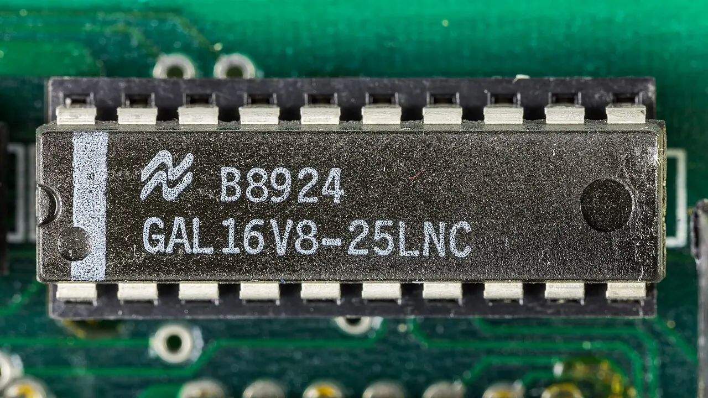

SK하이닉스 주식은 HBM이라는 강한 이야기를 갖고 있습니다. AI 가속기에는 고대역폭 메모리가 필요하고, SK하이닉스는 이 시장에서 중요한 공급자로 평가받고 있습니다. 그러나 좋은 성장 산업일수록 고객 집중과 기술 전환 리스크를 같이 봐야 합니다.
HBM 매출은 단가와 마진이 높지만 고객 요구가 까다롭습니다. 성능, 발열, 패키징, 납기, 품질 인증이 모두 맞아야 합니다. 한두 대형 고객의 주문이 실적을 크게 좌우하면 좋은 국면에서는 이익이 빠르게 늘지만, 고객의 제품 일정이 늦어질 때 변동성도 커집니다.
투자자는 HBM 성장률만 보지 말고 고객 구성, 차세대 HBM 전환 속도, 범용 D램 가격, 낸드 회복, 설비투자 현금 유출을 함께 봐야 합니다. SK하이닉스의 강점은 분명하지만 주가는 강점이 이미 얼마나 반영됐는지도 따집니다.
HBM은 인증 산업입니다

HBM은 단순 생산량보다 고객 인증과 품질 신뢰가 중요합니다.
차세대 제품 전환에서는 수율과 발열 관리가 마진을 좌우합니다.
고객 일정과 반도체 설계 변화가 메모리 출하 시점을 함께 바꿉니다.
이 대목에서는 숫자 하나를 따로 떼어 보지 않는 편이 좋습니다. HBM은 단순 생산량보다 고객 인증과 품질 신뢰가 중요합니다. 차세대 제품 전환에서는 수율과 발열 관리가 마진을 좌우합니다. 고객 일정과 반도체 설계 변화가 메모리 출하 시점을 함께 바꿉니다. 이 흐름이 다음 분기에도 이어지는지 확인하면 뉴스의 크기와 실제 투자 가치 사이의 간격을 줄일 수 있습니다.
고객 집중은 양날입니다
대형 AI 고객이 강하게 주문하면 실적 레버리지가 커집니다.
반대로 특정 고객 의존도가 높으면 제품 전환 지연이 실적 변동으로 이어집니다.
투자자는 고객 확대 여부와 장기 공급 계약 구조를 함께 확인해야 합니다.
이 대목에서는 숫자 하나를 따로 떼어 보지 않는 편이 좋습니다. 대형 AI 고객이 강하게 주문하면 실적 레버리지가 커집니다. 반대로 특정 고객 의존도가 높으면 제품 전환 지연이 실적 변동으로 이어집니다. 투자자는 고객 확대 여부와 장기 공급 계약 구조를 함께 확인해야 합니다. 이 흐름이 다음 분기에도 이어지는지 확인하면 뉴스의 크기와 실제 투자 가치 사이의 간격을 줄일 수 있습니다.
범용 메모리도 필요합니다
HBM이 주목받아도 전체 이익에는 범용 D램과 낸드 사이클이 남아 있습니다.
PC와 모바일 수요가 약하면 메모리 업황 회복의 폭이 제한될 수 있습니다.
고부가 제품과 범용 제품의 가격 차이가 얼마나 유지되는지 봐야 합니다.
이 대목에서는 숫자 하나를 따로 떼어 보지 않는 편이 좋습니다. HBM이 주목받아도 전체 이익에는 범용 D램과 낸드 사이클이 남아 있습니다. PC와 모바일 수요가 약하면 메모리 업황 회복의 폭이 제한될 수 있습니다. 고부가 제품과 범용 제품의 가격 차이가 얼마나 유지되는지 봐야 합니다. 이 흐름이 다음 분기에도 이어지는지 확인하면 뉴스의 크기와 실제 투자 가치 사이의 간격을 줄일 수 있습니다.
설비투자는 현금을 먹습니다
HBM 수요 대응에는 첨단 패키징과 장비 투자가 필요합니다.
투자가 빠르게 늘면 이익이 좋아도 자유현금흐름은 늦게 회복될 수 있습니다.
재무 안정성과 투자 속도는 주주환원 기대에도 영향을 줍니다.
설비투자는 현금을 먹습니다을 볼 때는 숫자 하나를 따로 떼어 보지 않는 편이 좋습니다. HBM 수요 대응에는 첨단 패키징과 장비 투자가 필요합니다. 투자가 빠르게 늘면 이익이 좋아도 자유현금흐름은 늦게 회복될 수 있습니다. 재무 안정성과 투자 속도는 주주환원 기대에도 영향을 줍니다. 이 흐름이 다음 분기에도 이어지는지 확인하면 뉴스의 크기와 실제 투자 가치 사이의 간격을 줄일 수 있습니다.
밸류에이션은 사이클을 묻습니다
메모리주는 고점 이익보다 다음 하강 사이클을 먼저 할인할 때가 많습니다.
HBM이 과거 사이클을 얼마나 완화하는지 확인해야 합니다.
주가가 더 오르려면 성장뿐 아니라 이익의 지속성이 증명돼야 합니다.
밸류에이션은 사이클을 묻습니다을 볼 때는 숫자 하나를 따로 떼어 보지 않는 편이 좋습니다. 메모리주는 고점 이익보다 다음 하강 사이클을 먼저 할인할 때가 많습니다. HBM이 과거 사이클을 얼마나 완화하는지 확인해야 합니다. 주가가 더 오르려면 성장뿐 아니라 이익의 지속성이 증명돼야 합니다. 이 흐름이 다음 분기에도 이어지는지 확인하면 뉴스의 크기와 실제 투자 가치 사이의 간격을 줄일 수 있습니다.
SK하이닉스의 HBM 경쟁력은 강한 투자 포인트입니다. 다만 강한 투자 포인트가 곧 낮은 위험을 뜻하지는 않습니다. 고객 집중, 제품 전환, 설비투자, 범용 메모리 회복이 함께 맞아야 높은 이익이 오래 유지됩니다.
다음 실적에서는 HBM 매출 비중, 고객 확대 신호, 차세대 제품 수율, D램 가격, 설비투자 계획을 같은 표에서 봐야 합니다. SK하이닉스 주식의 질문은 성장 여부가 아니라 성장의 질과 지속성입니다.
국내 기업 투자는 실적뿐 아니라 환율, 외국인 수급, 지배구조, 주주환원 정책의 영향을 크게 받습니다. 같은 이익 회복이라도 배당과 자사주, 설비투자 계획이 어떻게 배분되는지에 따라 주가 반응은 달라질 수 있습니다.
투자자는 분기 실적의 좋은 숫자만 보지 말고 현금이 실제로 남는지 확인해야 합니다. 재고, 매출채권, 설비투자, 환율 효과를 나눠 보면 이익의 질이 더 잘 보입니다.
마지막으로 반도체 글을 읽을 때는 가격이 먼저 움직인 뒤 이유가 붙는 경우가 많다는 점을 기억해야 합니다. 투자자는 결론을 서둘러 정하기보다 공식 자료, 최근 실적, 현금흐름, 밸류에이션, 시장 기대가 서로 같은 방향인지 차분히 확인하는 편이 좋습니다.
국내 기업 투자는 실적뿐 아니라 환율, 외국인 수급, 지배구조, 주주환원 정책의 영향을 크게 받습니다. 같은 이익 회복이라도 배당과 자사주, 설비투자 계획이 어떻게 배분되는지에 따라 주가 반응은 달라질 수 있습니다.
투자자는 분기 실적의 좋은 숫자만 보지 말고 현금이 실제로 남는지 확인해야 합니다. 재고, 매출채권, 설비투자, 환율 효과를 나눠 보면 이익의 질이 더 잘 보입니다.
마지막으로 투자 글을 읽을 때는 가격이 먼저 움직인 뒤 이유가 붙는 경우가 많다는 점을 기억해야 합니다. 투자자는 결론을 서둘러 정하기보다 공식 자료, 최근 실적, 현금흐름, 밸류에이션, 시장 기대가 서로 같은 방향인지 차분히 확인하는 편이 좋습니다.
이 글의 목적은 정답을 대신 내려 주는 것이 아니라 확인 순서를 줄이는 데 있습니다. 관심 종목이나 상품이 있다면 같은 기준을 표로 옮겨 적고, 다음 실적 발표 때 실제 숫자가 어떻게 변했는지 다시 비교해 보는 방식이 가장 안전합니다.
SK하닉스 주식 HBM 성장보다 고객 집중 리스크를 함께 봐야 합니다를 다시 점검할 때는 한 번의 뉴스보다 여러 분기의 방향이 중요합니다. 숫자가 좋아지는 이유가 가격인지 물량인지, 비용 절감인지 일회성인지 나누어 보면 기대와 현실의 차이를 더 빨리 알아차릴 수 있습니다.
국내 기업 투자는 실적과 수급이 동시에 움직일 때 탄력이 커지는 경우가 많습니다. 이익 전망이 좋아져도 외국인 환헤지 비용이 높거나 주주환원 기대가 약하면 주가 반응이 늦어질 수 있습니다. 따라서 실적표와 수급표를 함께 보는 습관이 필요합니다.
기업별로는 영업이익보다 영업현금흐름을 더 가까이 봐야 합니다. 재고와 매출채권이 늘어나는 회복은 실제 현금 회복이 늦을 수 있습니다. 설비투자가 큰 기업은 이익이 좋아져도 자유현금흐름이 따라오는지 확인해야 합니다.
주주환원은 결과이지 출발점이 아닙니다. 배당과 자사주가 지속되려면 본업의 현금 창출력이 먼저 안정돼야 합니다. 투자자는 주주환원 발표와 함께 투자 계획, 부채, 운전자본 변화를 같이 확인해야 합니다.
또 하나 중요한 점은 기록입니다. 관심 있는 종목이나 상품을 볼 때 오늘의 판단 근거를 짧게 남겨 두면 다음 실적 발표나 시장 변화가 왔을 때 생각이 어떻게 달라졌는지 확인할 수 있습니다. 이 기록은 매수와 매도보다 먼저 투자 습관을 안정시키며, 같은 실수를 반복하지 않게 도와줍니다.
작은 차이를 확인하는 습관이 쌓이면 같은 뉴스에서도 더 침착하게 판단할 수 있습니다.
관련 영상
SK하이닉스 HBM과 AI 메모리 사이클 분석